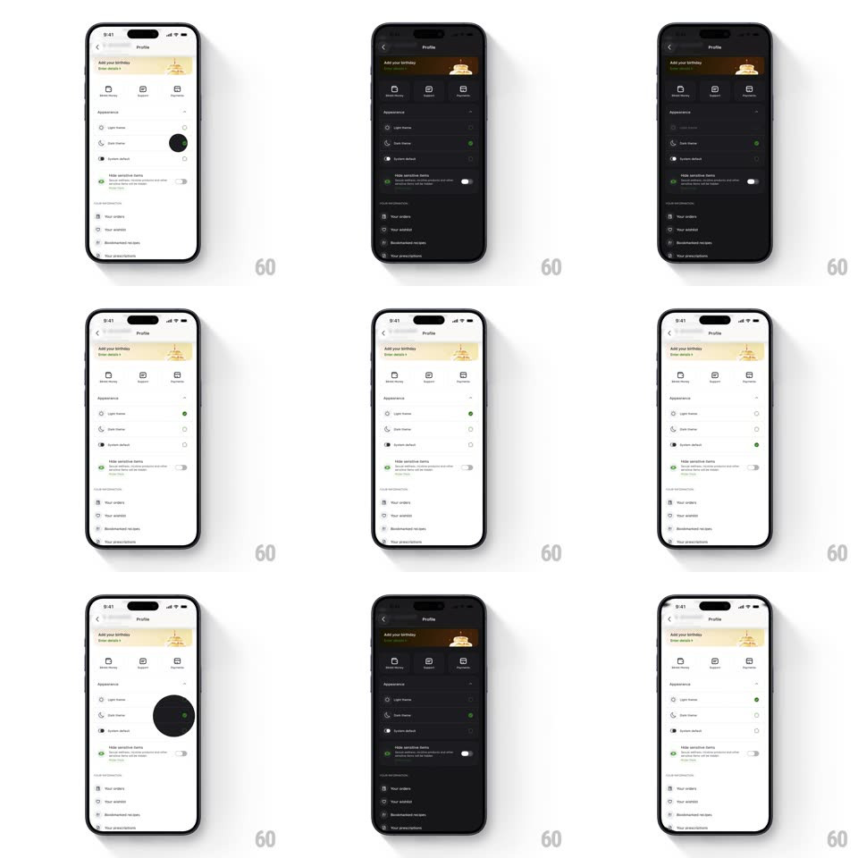

Media
Frame-by-frame

Rebuild this animation 1:1: Blinkit's theme toggle - selecting Dark (or Light) theme fires a circular mask that grows from the toggle's position and washes the new theme across the whole screen.

Rebuild this animation 1:1: Blinkit's theme toggle - selecting Dark (or Light) theme fires a circular mask that grows from the toggle's position and washes the new theme across the whole screen. ## Integration Integration: stack-agnostic spec - springs given as stiffness/damping, timed motions as duration + curve; map every value to your framework and animation library of choice. ## Scene Blinkit's Profile screen: a "Add your birthday" banner, quick-action icons, then the Appearance section with three radio rows (Light theme, Dark theme, System default), a "Hide sensitive items" toggle, and account rows below. The screen is light by default and fully dark after the change. ## Motion spec Pattern: circular mask reveal from the toggle origin on theme change. - Tapping a theme row selects its radio (fill pops, 150ms) and immediately fires the reveal: a circle of the new theme grows from the tapped row's center (radius 0 -> screen diagonal, 550ms, ease-out) - everything inside the circle is already the new theme, outside is the old. - The circle's edge is crisp - no feathering - so the wipe reads as a clean iris, not a gradient. - Content inside the revealed area is fully re-themed (background, text, icons, dividers, the birthday banner's tint) - no elements lag behind the mask. - On completion the status bar style flips (light <-> dark content) in the final 100ms. - Tapping the other theme fires the same reveal from that row, reversing the palette. ## Calibration - The origin is the tapped row, always - the circle never starts from screen center. - One uninterrupted expansion - no pause or two-stage ease that would read as lag. ## Reduced motion Whole-screen crossfade between themes (300ms) without the circular mask. ## Don't miss - The System default row sits between the two themes with its own radio - it follows the OS without firing the reveal from itself. - The birthday banner re-themes too (its warm tint deepens) - banners are inside the mask, not above it.